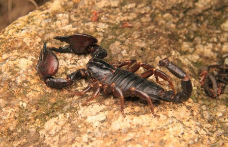
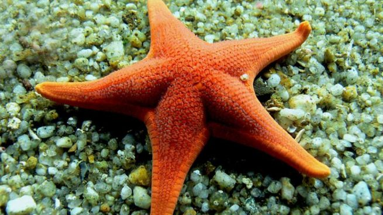
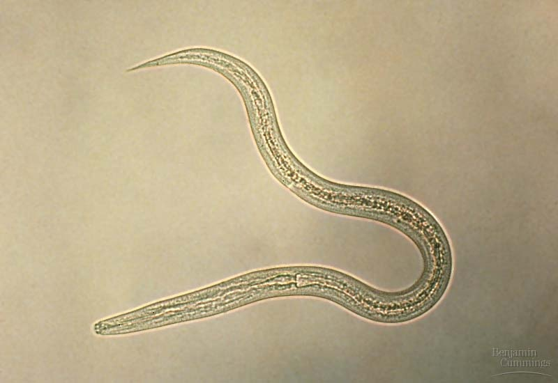

Exoesqueleto de quitina y patas articuladas.
Simetría pentarradiada, esqueleto externo de piezas calcáreas.
Boca con rádula, pie muscular y manto alrededor de la concha.

Parazoos; sin simetría definida; cuerpo perforado por poros inhalantes.

Gusanos pseudocelomados de sección circular con cutícula quitinosa.
